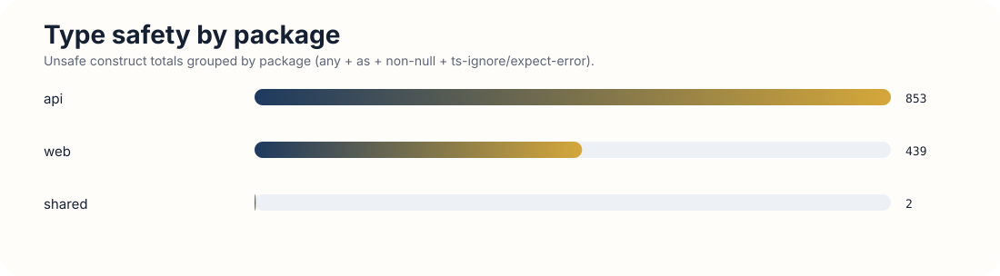
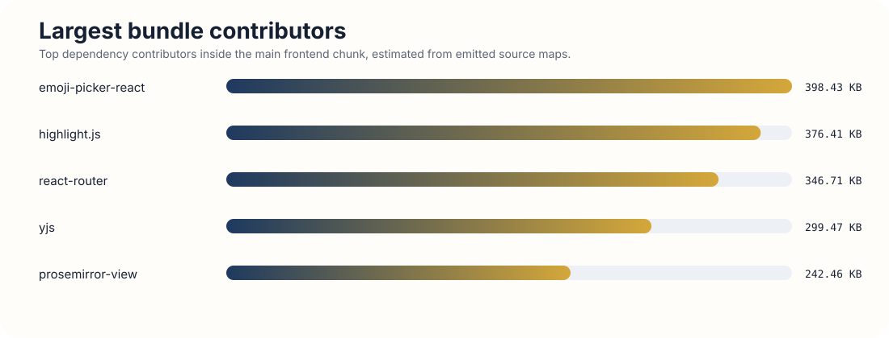
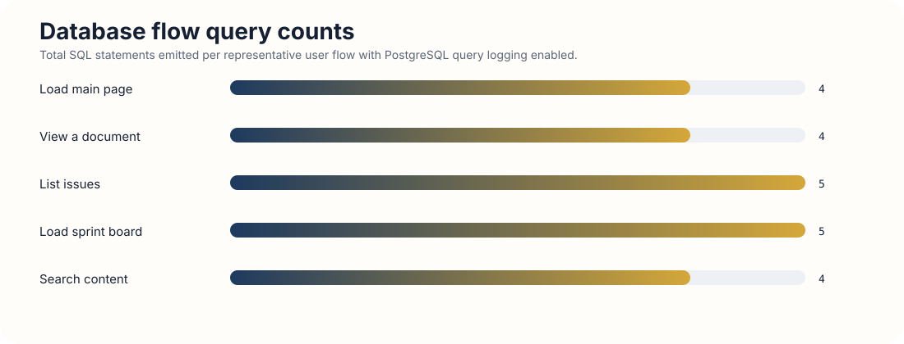
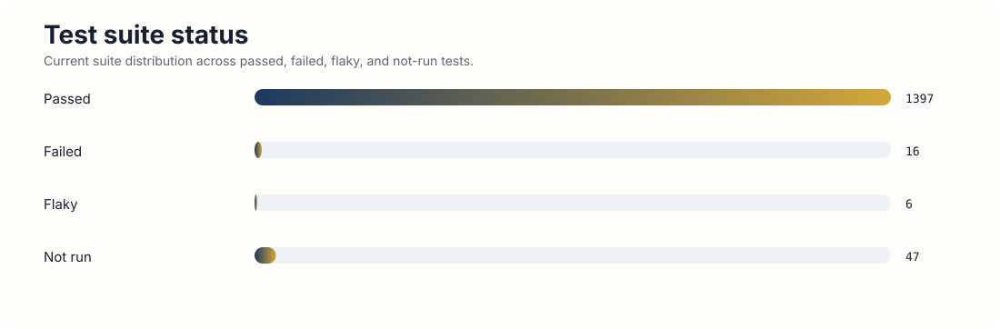

Type safety by package
Total unsafe constructs grouped by package. This makes the concentration in api/ immediately visible.

Ship is a government-oriented, Jira-like planning and execution system built on a stricter architectural premise: everything is a document. Programs, projects, weeks, issues, plans, and retros all share the same core model, with TypeScript acting as the main enforcement layer for type-specific behavior and conventions.
This submission covers Phase 1 only: the 36-hour audit. The goal here is diagnosis, not treatment. I did not count fixes as part of this submission. I measured the current state of the codebase across the seven required categories, recorded concrete baselines, and ranked the highest-impact weaknesses for follow-on work.
Repository path: /Users/youss/Development/gauntlet/ship
Verified endpoints:
http://localhost:5173http://localhost:3000/api/docs/http://localhost:3000/healthEmail: dev@ship.local
Password: admin123
docker-compose.yml and docker-compose.local.yml together.version is obsolete warning, but it is non-blocking.3000 can block the API container from starting.I measured explicit any, type assertions with as, non-null assertions !, and @ts-ignore / @ts-expect-error. I also checked the root, web, api, and shared tsconfig.json files to confirm whether strict mode is enabled.
web/, api/, and shared/tsc --strict --noEmit| Audit deliverable | Baseline |
|---|---|
| Total any types | 273 |
| Total type assertions (as) | 691 |
| Total non-null assertions (!) | 329 |
| Total @ts-ignore / @ts-expect-error | 1 |
| Strict mode enabled? | Yes |
| Strict mode error count (if disabled) | 0, measured by forcing tsc --strict --noEmit rather than editing tsconfig |
| Top 5 violation-dense files | api/src/routes/weeks.ts 85; api/src/routes/projects.ts 51; api/src/routes/issues.ts 49; web/src/pages/UnifiedDocumentPage.tsx 37; api/src/db/seed.ts 35 |
api/ package is the main source of unsafe typing, which is the wrong place for looseness because it sits on the system boundary.shared/ package is comparatively disciplined. The core contract model is not the problem.| Severity | Finding | Why |
|---|---|---|
| High | Unsafe typing concentrated in api/ route handlers | Route handlers sit on the trust boundary. Failures here can produce invalid writes, null crashes, or auth/path inconsistencies. |
| High | Dense assertions in week/project/issue/document core flows | These are central product surfaces. Repeated assertions suggest brittle modeling exactly where the architecture matters most. |
| Medium | Test suites also bypass types frequently | This makes tests less trustworthy as a safety net, but the runtime risk is lower than production route code. |
| Low | shared/ package has minimal violations | This is a strength and lowers contract drift across packages. |
Eliminate 25% of type safety violations while preserving existing functionality. Superficial fixes do not count. Replacing any with unknown without proper narrowing is not an improvement. Each fix must use correct, meaningful types that reflect the actual data.
For the rubric’s strict-error field, I did not mutate repo configuration. I forced strict checking at the CLI and recorded the resulting count.
I measured total production bundle output, the largest emitted chunk, number of chunks, largest dependency contributors in the main bundle, unused dependencies, and whether code splitting is actually effective.
web/dist/assetsweb/| Audit deliverable | Baseline |
|---|---|
| Total production bundle size | 10,539.29 KB |
| Largest chunk | index-C2vAyoQ1.js — 2,025.14 KB raw / 589.52 KB gzip |
| Number of chunks | 262 |
| Top 3 largest dependencies | emoji-picker-react 398.43 KB; highlight.js 376.41 KB; react-router 346.71 KB |
| Unused dependencies identified | @tanstack/query-sync-storage-persister, @uswds/uswds |
| Severity | Finding | Why |
|---|---|---|
| High | Oversized main JS chunk | This directly affects initial load cost and first-use performance. |
| High | Editor/collaboration code likely front-loaded | The product is editor-heavy, but not every page should pay the full editor tax immediately. |
| Medium | Broken or incomplete code splitting | This is a concrete optimization opportunity with low product risk. |
| Low | Unused dependencies in web/ | Worth cleaning up, but secondary compared to the main chunk size problem. |
Reduce total production bundle size by 15%, or implement code splitting that reduces the initial page-load bundle by 20%. Before/after bundle analysis output is required. Removing functionality to shrink the bundle does not count.
I measured five representative API endpoints after increasing the dataset to a realistic size. I focused on P50, P95, and P99 latency at concurrency 10, 25, and 50.
| Endpoint | P50 | P95 | P99 |
|---|---|---|---|
GET /api/documents | 125ms / 288ms / 612ms | 181ms / 407ms / 719ms | 213ms / 452ms / 744ms |
GET /api/issues | 42ms / 108ms / 233ms | 65ms / 158ms / 334ms | 85ms / 178ms / 354ms |
GET /api/documents/:id | 19ms / 52ms / 92ms | 27ms / 85ms / 134ms | 50ms / 97ms / 154ms |
GET /api/weeks/:id/issues | 20ms / 52ms / 104ms | 38ms / 100ms / 144ms | 60ms / 117ms / 161ms |
GET /api/search/learnings?q=api | 15ms / 37ms / 74ms | 24ms / 81ms / 102ms | 56ms / 92ms / 136ms |
GET /api/documents is the clearest backend hot path. At concurrency 50, its P95 reaches 719ms.| Severity | Finding | Why |
|---|---|---|
| High | GET /api/documents has the weakest tail latency | It supports a core navigation flow and degrades significantly as concurrency increases. |
| Medium | Issue and week list endpoints show moderate tail growth | These are important flows, but they remain materially faster than the document list path. |
| Low | Search and document detail reads are comparatively healthy | These are not the immediate performance bottlenecks. |
| Low | Dev rate limiting complicates measurement | This matters for audit accuracy, but it is not itself a user-facing production bottleneck. |
Reduce P95 response time by 20% on at least two endpoints. Before/after benchmarks must run under identical conditions: same data volume, same concurrency, and same hardware. The root cause of each bottleneck must be documented.
I measured five representative user flows against PostgreSQL query logging to understand how efficiently the app queries the database, especially given the unified document model.
| User Flow | Total Queries | Slowest Query (ms) | N+1 Detected? |
|---|---|---|---|
| Load main page | 4 | 2.441 | No |
| View a document | 4 | 0.845 | No |
| List issues | 5 | 0.527 | No |
| Load sprint board | 5 | 0.750 | No |
| Search content | 4 | 0.510 | No |
document_associations.WHERE da.document_id = ANY($1).documents, document_associations, users, and person documents.| Severity | Finding | Why |
|---|---|---|
| High | Broad unified document list query is the main database-linked risk | This aligns with the slowest API endpoint and will get worse as workspace data volume grows. |
| Medium | Association-heavy joins are a scale risk | They are controlled now, but the document graph model depends on them heavily. |
| Low | No N+1 issue in sampled flows | This lowers immediate risk in common list and board surfaces. |
| Low | Current per-flow query counts are efficient | The data access layer is not obviously wasteful in number of round trips. |
Reduce total query count by 20% on at least one user flow, or improve the slowest query by 50%. Before/after EXPLAIN ANALYZE output is required, along with a clear explanation of what was inefficient and why the change fixes it.
I used the repo’s API, frontend, and Playwright test surfaces to measure pass/fail state, runtime, flaky behavior, and coverage gaps against critical user flows.
| Audit deliverable | Baseline |
|---|---|
| Total tests | 1,466 discovered |
| Pass / Fail / Flaky | 1,397 / 16 / 6 |
| Suite runtime | API: ~22s, E2E: ~19.0m |
| Critical flows with zero coverage | collaboration disconnect/reconnect recovery; multi-user concurrent editing as a formal regression suite; keyboard and screen-reader accessibility workflows |
| Code coverage % | web: not measured in this audit window / api: not measured in this audit window |
web/src/lib/document-tabs.test.ts:172web/src/components/editor/DetailsExtension.test.ts:16e2e/drag-handle.spec.ts:300e2e/my-week-stale-data.spec.ts:28e2e/program-mode-week-ux.spec.ts:369| Severity | Finding | Why |
|---|---|---|
| High | E2E and web suites are not fully green | A failing baseline weakens confidence in future changes. |
| High | Critical collaboration and recovery flows have weak automated coverage | Those are core product risks, not secondary polish areas. |
| Medium | No clean repo-wide coverage baseline | This slows prioritization, but it is secondary to actual failing tests and missing critical-path coverage. |
| Low | API test surface appears relatively healthy | This is a strength and lowers risk on backend-only refactors. |
Add meaningful tests for three previously untested critical paths, or fix three flaky tests with documented root cause analysis. The added tests must catch real regressions, not merely assert that a page loads.
I focused on browser console noise, user-visible failed requests, network disconnect recovery in the collaborative editor, concurrent editing behavior, server-side unhandled errors, and error boundary presence.
/docs, /issues, /my-week, and a document page| Audit deliverable | Baseline |
|---|---|
| Console errors during normal usage | 2 repeated errors per sampled page |
| Unhandled promise rejections (server) | 0 observed |
| Network disconnect recovery | Pass |
| Missing error boundaries | None obvious in audited core flows; explicit boundaries in web/src/pages/App.tsx, web/src/components/Editor.tsx, and web/src/components/ui/ErrorBoundary.tsx |
| Silent failures identified | 2 notable cases: api/auth/session request failures surfaced in console but not meaningfully in UI; modal overlay can intercept early editor interaction and make the editor feel unresponsive until dismissed |
Failed to load resource: the server responded with a status of 500 and GET /api/auth/session :: net::ERR_ABORTED.| Severity | Finding | Why |
|---|---|---|
| High | Silent or confusing interaction failures around editor entry | Confusion in the core editor surface is a serious product risk even without outright crashes. |
| Medium | Repeated console/runtime noise in normal usage | This degrades debuggability and may hide real failures. |
| Low | Offline collaboration recovery was successful in the audited case | This is a strength rather than a weakness. |
| Low | No server-side unhandled promise rejections observed | Also a strength in the current baseline. |
Fix three error-handling gaps. At least one must involve a real user-facing data-loss or confusion scenario, not just a missing loading spinner. Each fix requires reproduction steps, before/after behavior, and a screenshot or recording.
I measured page-level accessibility scores, rule-level violations, keyboard navigation completeness, color contrast failures, and the most important missing semantics on core pages.
| Audit deliverable | Baseline |
|---|---|
| Lighthouse accessibility score (per page) | /docs 100; /issues 100; /my-week 100; /documents/:id 100 |
| Total Critical/Serious violations | 2 Critical / 20 Serious |
| Keyboard navigation completeness | Partial |
| Color contrast failures | 18 |
| Missing ARIA labels or roles | Workspace documents list on /docs and /documents/:id: ul[aria-label="Workspace documents"] failed aria-required-children; one list item failed listitem |
/my-week and the document list views.| Severity | Finding | Why |
|---|---|---|
| High | Critical/serious axe violations despite perfect Lighthouse scores | This creates a real compliance and confidence gap. |
| High | Contrast failures concentrated on /my-week | This affects a core page and directly harms readability. |
| Medium | Broken list semantics on workspace document views | This weakens screen reader interpretation on important navigation surfaces. |
| Medium | Keyboard navigation is only partial | This is a practical usability issue, especially for accessibility claims. |
Achieve a Lighthouse accessibility score improvement of 10+ points on the lowest-scoring page, or fix all Critical/Serious violations on the three most important pages. Before/after Lighthouse reports or axe scan output are required as evidence.
shared/ is comparatively disciplined.api/ route handlers and core document/week/project flows.Total unsafe constructs grouped by package. This makes the concentration in api/ immediately visible.

Top dependency contributors inside the main frontend chunk, estimated from the emitted source map.

Tail latency comparison for the five representative endpoints chosen from real browser traffic.

Representative SQL statement counts per user flow with PostgreSQL logging enabled.

The current distribution of passed, failed, flaky, and not-run tests across the measured suite.

This is the clearest illustration of why Lighthouse alone was not enough for the accessibility audit.